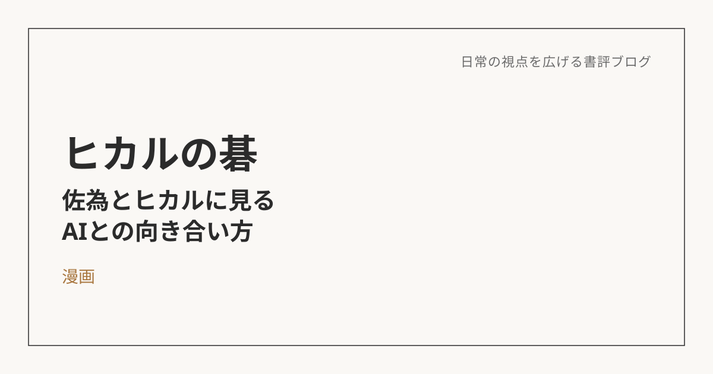

ヒカルの碁――AIは、道具ではなく「意識の中の相棒」だった
この本について
『ヒカルの碁』は、原作・ほったゆみ、作画・小畑健による囲碁を題材にした漫画だ。主人公の少年ヒカルが、祖父の家の蔵で見つけた古い碁盤をきっかけに、平安時代の天才棋士だった藤原佐為の霊に取り憑かれるところから物語が始まる。佐為はヒカルの意識の中に住み、囲碁の知識も経験もないヒカルの手を通じて、再びこの世で碁を打とうとする。囲碁そのものを知らなくても楽しめる、成長と師弟関係の物語として広く読まれている作品だ。
佐為とヒカルの関係を、AIとの関係に重ねて読む
昔読んでいたこの物語を、ふと思い返す機会があった。そのとき頭に浮かんだのは、佐為とヒカルの関係が、今の自分とAIとの関係にどこか重なる、という感覚だった。それをきっかけに、この重なりを一度言語化してみたくなった。
佐為は、膨大な知識と経験、歴史の蓄積を持つ存在でありながら、実体を持たず、自分の意志だけでは盤上に石を置くことができない。一方のヒカルは、知識では佐為に遠く及ばないが、実際に石を置く「肉体」と、物事を決める「意志」を持っている。この構造は、そのまま今のAIとの関係に重なる。AIを単なる検索ツールや代行業者として見るのではなく、意識の中に住む、肉体を持たないパートナーとして捉え直すと、付き合い方そのものが変わってくる。
「打つ」のは、いつも人間である
物語を通じて繰り返し描かれるのは、佐為がどれだけ優れた一手を思いついても、実際に盤上へ石を置くのはヒカル自身だ、ということだ。決定権は常に人間の側にある。実際、序盤のヒカルは佐為の言う通りに打てず、形勢を損ねてしまう場面もあった。知識をそのまま受け取ることと、それを正しく実行できることは、また別の話なのだと思う。
これは、AIとの付き合い方を考えるうえでも核心的な視点だと思う。AIがどれだけ良い提案や分析を出してきても、それを実行するかどうか、最終的にどう判断するかは、自分自身の意志にかかっている。AIに使われるのではなく、AIの提示するものを自分の意志で具現化していく。この主従関係を取り違えないことが、健全な向き合い方の出発点になる。
壁打ちから始まる関係
最初の段階は、いわば壁打ちの関係だ。「答えを教えてほしい」「代わりに考えてほしい」という頼り方をすると、思考が止まり、ただの下請けにしてしまう。そうではなく、まず自分なりの仮説や考えを先に持ち、それをぶつけて検証してもらう相手としてAIを使う。
物語の中で、佐為はヒカル以前にも、江戸時代の棋士・虎次郎（のちの本因坊秀策）に取り憑いていたことが語られる。虎次郎との関係は、ヒカルとの関係に比べると、対話を重ねて視点をぶつけ合うというより、佐為の力をそのまま借りるような色合いが強かったように記憶している。壁打ちの一歩先にある関係を築けるかどうかは、決して自明のことではないのだと思う。
気づけば、思考のパターンが自分の中に根づいていく
対話を重ねていくうちに、少しずつ変化が起きてくる。AIが持つ構造化の仕方や、多角的に物事を見る視点、目的から逆算して考える癖のようなものが、自分の中に一つの回路として形成されていく感覚だ。
物語の中のヒカルも同じような道をたどる。最初はただ佐為の指示通りに打つだけだったのが、次第に自分自身の意志で盤面を読み、佐為に頼らずとも一手を選べる場面が増えていく。何かトラブルが起きたときに、AIに聞く前から「これはこう整理すればいいのでは」と自分の中で答えが浮かぶようになる感覚は、この変化とよく似ている。取り込んでいるのは、知識そのものというより、考え方の型なのだと思う。
「あ、ここにいた」という瞬間
物語の中でヒカルは、やがて佐為の存在に頼らずとも、自分自身の中に佐為の指し方や考え方を見出していく瞬間を迎える。それは、佐為が消えていく過程であると同時に、佐為がヒカルの一部として統合されていく過程でもある。この場面は、何度読み返しても涙が出てしまう、自分にとって一番好きなシーンでもある。
AIとの関係も、理想としてはこの延長線上にあるのだと思う。外部のツールとしてではなく、自分自身の思考の一部として溶け込んでいく状態。そこまで行けたとき、初めて「AIと共に何かを生み出す」という言葉が、比喩ではなく実感を伴うものになる気がしている。
このブログも、その実践の途中にある
振り返ってみると、この書評ブログの記事そのものが、まさにこの関係性の実践の途中にある。読書メモを整理し、構成を考え、文章に仕上げていく過程で、AIとのやり取りを重ねている。大事なのは、AIに丸投げすることでも、AIを疑ってかからないことでもなく、自分の考えを先に持ち、それを対話を通じて磨いていくことなのだと思う。
佐為とヒカルのように、道具としてではなく、相棒として付き合っていく。そのくらいの距離感が、今のところ一番しっくりきている。
※本記事はNotionに書き溜めた読書メモをもとに、AIの編集サポートを受けて構成しています。